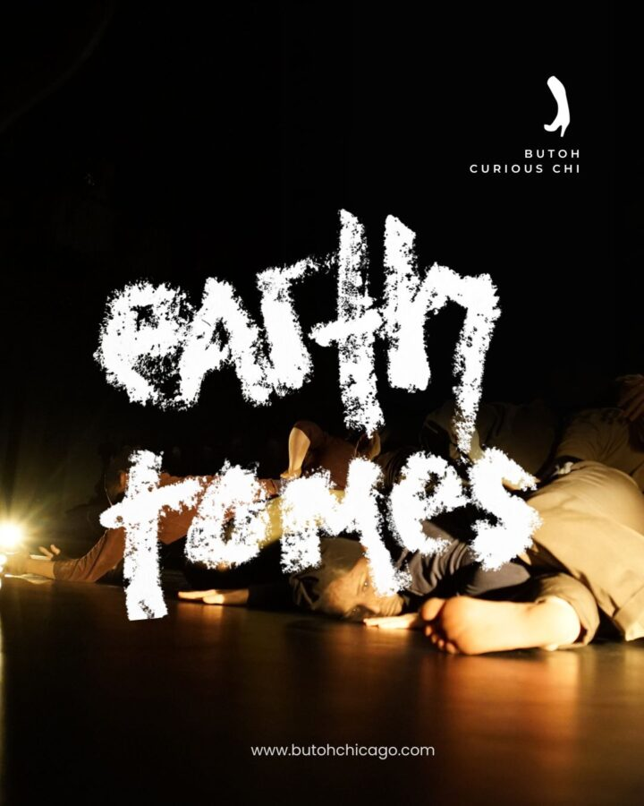

Earth Tomes
Earth Tomes
7pm Sunday, March 15, 2026
One Night Only Performance
Hairpin Arts Center, 2810 N Milwaukee Ave, 2nd floor
Co-directed by Joan/Kogut & Sharkey Zalek
Live sound by Norman W. Long
A birth, in which she enters as a tree and emerges as a body turned to earth.
Featuring: Cristal Sabbagh, Wannapa Pimtong-Eubanks, Aja Singletary, Helen Lee, Joan Gutiérrez, Corin Wiggins, Keiko Johnson, Elaine Lemieux, Aurora Tabar, Harlan Rosen, Sharkey Zalek, and Joan/Kogut